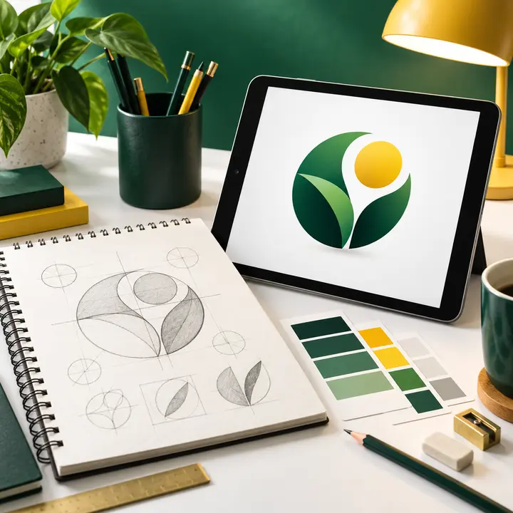
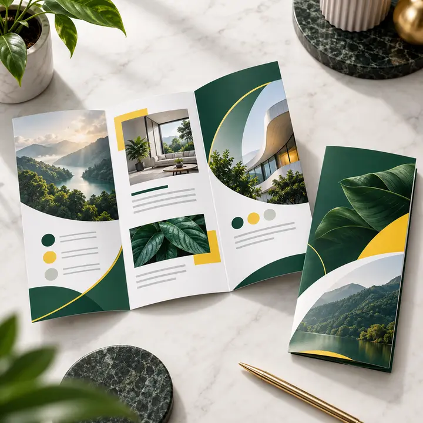

CDR vs PSD: which design file do you need?

Choose CDR when you need to work in CorelDRAW, especially for vector layouts and print artwork. Choose PSD when you need to edit a Photoshop document with layers, photographs and image effects. Check the actual contents of each bundle before buying.
Compare the formats
| Detail | CDR | PSD |
|---|---|---|
| Main editor | CorelDRAW | Adobe Photoshop |
| Typical work | Vector illustration and page layouts | Layered image editing and compositing |
| What to check | Version, fonts, linked images and editable text | Resolution, layers, fonts and smart objects |
For business cards and printing
Both formats can be used for print work if the document is prepared correctly. CDR can contain raster images, and PSD can contain text and vector shape layers. The file extension alone does not guarantee print quality or complete editability.
Can I open one in the other application?
Do not assume direct conversion will preserve everything. Use the intended editor or ask for an agreed export such as PDF for print. Fonts, effects and editable layers can change during conversion.
Before choosing a bundle
- Read the listed formats and software version requirements.
- Check whether text and important objects remain editable.
- Confirm included fonts, images and usage rights.
- Ask about compatibility if your software is older.
Compare the available bundles.
Published by Sai Graphic Designs · Madurai, Tamil Nadu
Explore our design services
Planning your next project? Explore these services from Sai Graphic Designs and share your brief for a tailored quote.

Logo Design
Create a clear brand mark for your business and agree on the final vector and web files.
View service & discuss your project →
Brochure Design
Present your services or product range through clear, organized brochure layouts.
View service & discuss your project →
Business Card Design
Prepare a professional card layout using your approved details and printer specifications.
View service & discuss your project →Visuals are design concepts. Scope, revisions, delivery dates and final files are confirmed in your quotation.